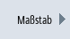
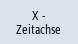
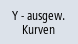
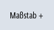
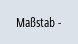

Die Skalierung ermöglicht Ihnen eine genaue Messung ausgewählter Variablen von X-Zeitachse als auch von Y-Wertachse. Sie haben die Möglichkeit die vergrößerte bzw. die verkleinerte Darstellung benutzerdefiniert zu speichern.
Einstellung | Bedeutung |
|---|
X Minimum bzw.
X Maximum | Größter und kleinster Wert der X-Zeitachse. Bei einem erneuten Tracestart werden die Werte für die Aufzeichnung verwendet. |
| | Feste Skala X-Achse | Werte der X-Zeitachse erhalten. |
| | Streifenschreiber Modus
| Werte der X-Zeitachse während der Aufzeichnung verwenden. |
Y Minimum bzw.
Y Maximum | Größter und kleinster Wert der Y-Wertachse (Amplitude) festlegen. |
Offset bzw.
Auflösung | Effektivwerte (Mittelwerte) der Amplituden festlegen. Der Maßstabwechsel erfolgt jeweils um den Faktor 10. |
Zeit und Wertachse skalieren
 | 1. | Im Grafikfenster "Trace" ist eine Aufzeichnung geöffnet. |
|  | 2. | Drücken Sie den Softkey "Maßstab", um die Darstellung zu skalieren. |
|  | | Das Eingabefenster "Auswahl X-Y Skalierung" wird geöffnet und die Werte der X-Zeitachse werden angezeigt. |
 | 3. | Drücken Sie den Softkey "X-Zeitachse" erneut, wenn Sie die Werte ausblenden möchten. |
| | | - ODER - |
|  | | Drücken Sie den Softkey "Y-ausgew. Kurven", um sich die Werte der Y-Wertachse anzeigen zu lassen. |
 | | Drücken Sie den Softkey erneut, wenn Sie die Werte ausblenden möchten. |
| | | - ODER - |
| | | Sie haben beide Achsen angewählt. |
|   | 4. | Drücken Sie den Softkey "Maßstab +" oder "Maßstab -" so oft, bis die gewünschte Skalierung erreicht ist. |
| | | - ODER - |
| | | Geben Sie die Skalierungswerte direkt im Eingabefenster ein und wählen Sie die entsprechende Eigenschaft aus. |
| | 5. | Drücken Sie den Softkey "Maßstab", um die Einstellungen zu speichern. |
| | | - ODER - |
 | | Drücken Sie den Softkey "Angewählte anpassen", um die angewählten Verlaufgraphen im gesamten Grafikfenster anzuzeigen. |
| | | Drücken Sie den Softkey "Eine anpassen", um den angewählten Verlaufgraphen im gesamten Grafikfenster anzuzeigen. |